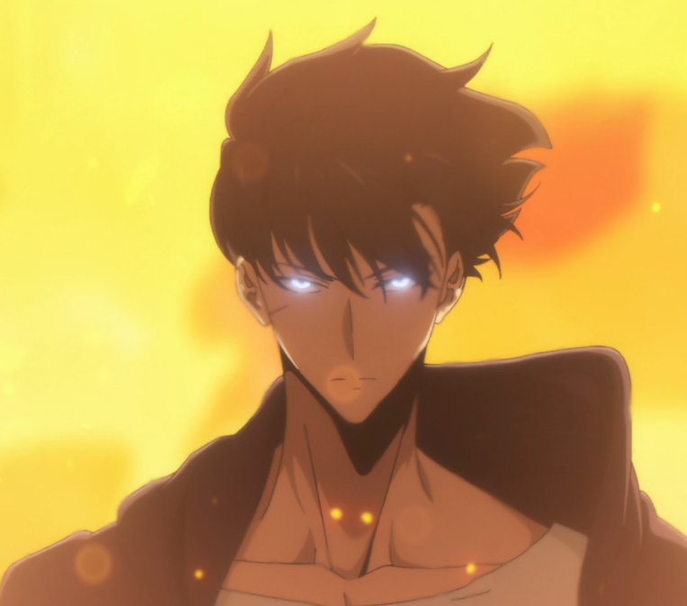

Sobre o protagonista.
Sung Jin-Woo é o protagonista do anime e manhwa Solo Leveling. No início da história, ele é conhecido como o "caçador mais fraco do mundo", um caçador de Rank E que mal consegue sobreviver nas masmorras. Apesar de sua fraqueza, Jin-Woo continua se arriscando em missões para sustentar sua família, mostrando sua determinação e coragem.
Sua vida muda drasticamente quando ele participa de uma missão em uma masmorra dupla, onde ocorre um massacre. Lá, ele recebe um misterioso poder conhecido como o "Sistema", que o transforma em um "jogador" — alguém capaz de crescer indefinidamente ao completar missões, subir de nível e adquirir novas habilidades.